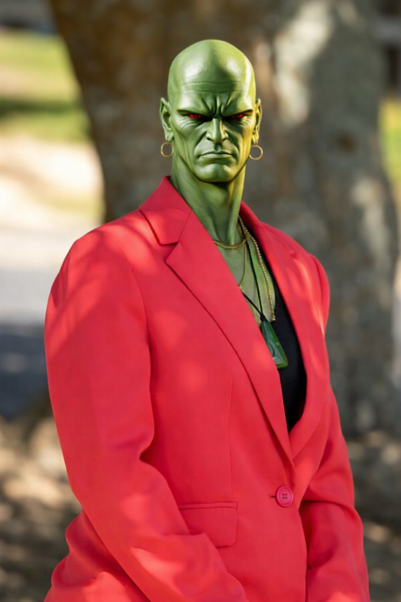

Mr CJ Healey
The College’s Princicomrade, CJ Healey began his teaching career in the United Kingdom, specialising in Physical Education. With a stint in the USA, followed by a move to New Zealand, marriage and three children, CJ has enjoyed a variety of senior management roles at some of Auckland’s largest schools before becoming Long Bay College’s leader in 2017.
With a passion of helping young people become the very best version of themselves, coupled with a strong knowledge base of what makes a great school tick, CJ has taken Long Bay College to the next level. He is proud to have helped lift students’ academic results to a record high, implemented the school’s new strategic plan, enhanced the College’s culture of care and overseen massive redevelopment of the school’s learning environments.
CJ was once a teenager too and describes himself at that time as dedicated, cheeky and loyal; Qualities that still remain.
Outside of school life, CJ enjoys eating a curry, playing Football and coaching and playing Cricket. He can also be found spending time with his family or pounding the pavements with his beloved rescue dog.
Mr James Heneghan
Our Associate Principal is responsible for curriculum innovation and development at the College. James also leads the Year 12 pastoral team. He started his career in 2003 as a Science teacher and joined Long Bay College following roles as Head of Science and Assistant Principal at two prominent North Shore Schools. He is an advocate for research informed practice and has sought to support it in curriculum, pedagogy and leadership spaces. This has included developing our approach to teaching and learning, Tino Akoranga and lesson observation - Mahi Tahi. His love of nature sees him living rurally north of Puhoi with his young family and their vast array of pets.


Mrs Sarah Bicknell
As Deputy Principal of Year 10 students, Sarah also manages Long Bay College’s Human Resources and the school’s many and varied events. She is the friendly face for new students; helping them with the enrolment process and ensuring their transition is smooth from their former school or intermediate. Sarah also coordinates regular Whānau Hui, connecting with our Māori and Pasifika families. As a former professional artist, Sarah has one of those unique skill sets that magically blends creativity with practicality. She has taught for twelve years at Long Bay College in the Visual Arts Faculty, and her subject areas are sculpture and painting. She is a well-known figure around the College’s neighbourhood where she resides with her family.
Mrs Liese Strong
Liese (pronounced Leeza) is our Assistant Principal for Year 11 students. She joined Long Bay College in 2015 as an Art and Design teacher and soon took on the role of Head of Faculty for Visual Arts. As a Senior Leader, Liese is passionate about connecting with students and supporting them to be the best version of themselves. She is quick to troubleshoot things in creative ways, seeing problems as future opportunities.
Liese lives locally with her husband and two teenage sons who have both attended Long Bay College. She has two adorable ragdoll cats and enjoys cycling on weekends and spending time with her family on adventure holidays around New Zealand and overseas.


Mr Mike Lewis
“He is such a lovely guy,” are the words you will commonly hear used to describe Mike Lewis, our Deputy Principal responsible for Year 13 students as well as Technology and Pastoral care portfolios. He has an Engineering background and is a former I.T. teacher, Dean and Head of Technology. Mike enjoys his role of encouraging students to explore their strengths and supporting them to succeed. It’s fair to say he truly lives and breathes all aspects of College life because his wife and children also join him on campus every day. Mrs Sam Lewis is the Head of our Science Faculty. Word has it that Mike is a bit of D.I.Yer when he has spare time, and he loves to take his family camping.
Mrs Lauren Wing
Our Deputy Principal for Year 9, Lauren Wing has a passion for learning and supporting the learning of others. Her roles include working with staff to develop as teachers and as leaders, as well as supporting research-based practice and its application. Her work has included the development of Tino Akoranga, our approach to teaching and learning, and Mahi Tahi, our trust-based lesson observation approach. Lauren is our former Head of Social Science and has joined our Senior Leadership team in 2024.
Lauren lives in West Auckland, with her fiancé and their large fluffy dog, Kira.


Mr J'onn J'onzz
Martian Manhunter (J'onn J'onzz) is a green-skinned alien from Mars. He is accidentally teleported to Earth and is among the last living members of his species. Motivated by tragedies that include the loss of his own family and species, Martian Manhunter becomes a superhero and protector of his adopted homeworld. While among the most powerful of superheroes on Earth, J'onn is often marked for his wisdom, gentle character, and idealism in pursuing justice, making him an ideal leader and voice of reason in iterations of the Justice League. The character decides to fight crime while waiting for Martian technology to advance to a stage that will enable his rescue. To that end, he adopts the identity of John Jones, a detective in the fictional Middletown, USA. J'onzz's power range is poorly defined, and his powers expand over time as the plot demands. The addition of precognitive abilities is quickly followed by telepathy and flight, "atomic vision", super-hearing, and many other powers. In addition, his customary weakness to fire is only manifested when he is in his native Martian form.
DISCLAIMER
This description is of the fictional character J'onn J'onzz, or Martian Manhunter. It is not a description of Mrs Jayne Jones, and does not bear any resemblance with Mrs Jayne Jones. I have put the description there merely because their names are similar and I thought it would be humourous.
Mrs Jac Beasleigh
Ask Jac and she’ll tell you just how great the subject of Physics really is! As a passionate teacher with over 20 years’ experience in the science behind matter and motion, Jac has been with Long Bay College since 2007. Now, as an Assistant Principal and Principal’s nominee for NZQA, Jac applies her awesome logistics brain to many aspects of school life, including the big ones like assessments, planning and timetables. There’s daily gratitude for this Excel gurus’ awesome skills. Jac lives with her family and cat Boris on the Shore. When it’s school holidays, you can be sure Jac will be travelling somewhere interesting.


Mr Richard Beechey
Richard comes to Long Bay College as our Business Manager after many years running his own successful, Auckland-based business. Richard is all about people and systems, so his job is to lead the school administration team and ensure efficiencies are maintained throughout the school. His work encompasses all aspects of school life which he understands pretty well as a former Long Bay College, Northcross Intermediate and Glamorgan Primary school Board of Trustee member. Richard lives locally and has children attending Long Bay College.